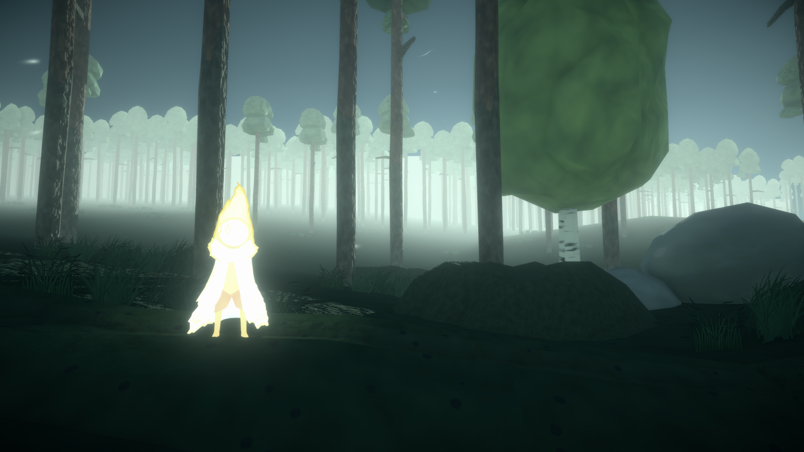
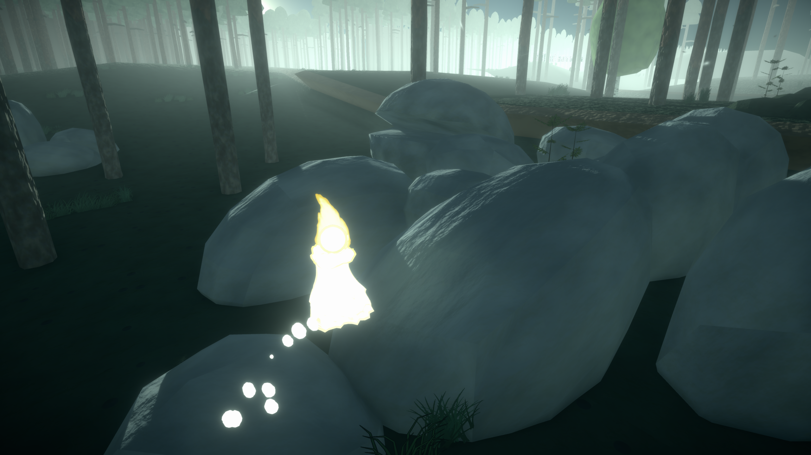
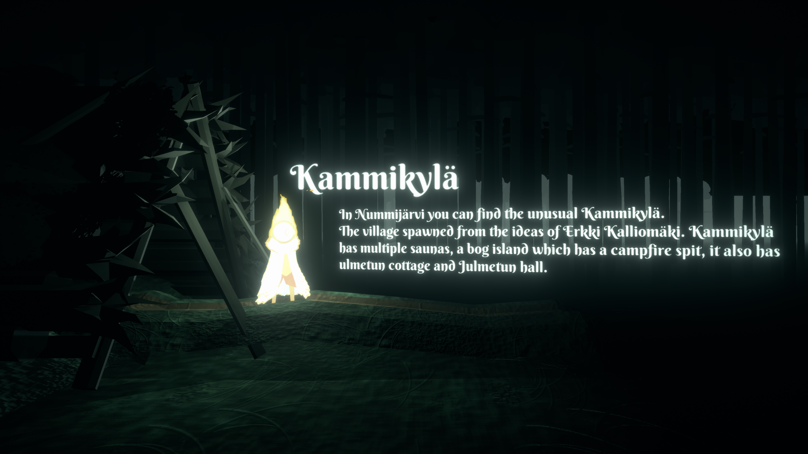
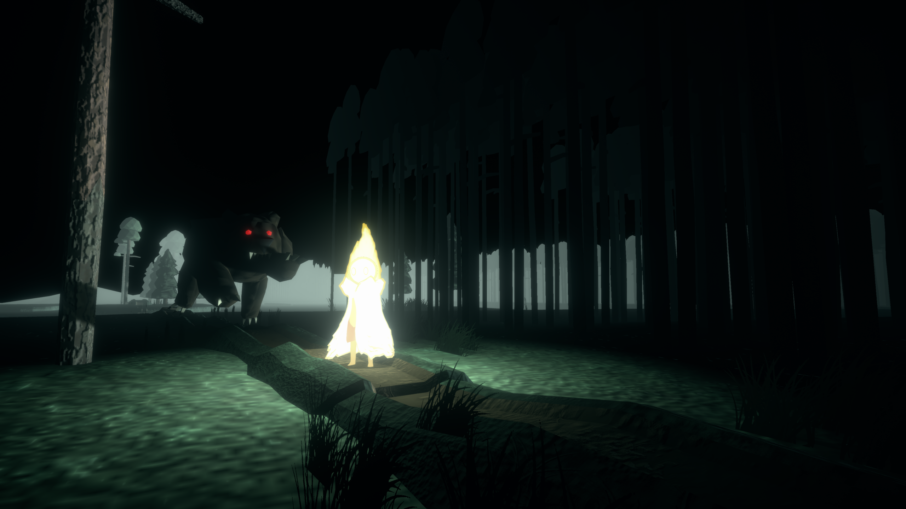

Sysimetsä
Year: 2020Engine: Unity
Platform: Windows, WebGL
My part: programming, game design, 3D-modeling
Sysimetsä is our team's final year project which we made for Kauhajoki Seura ry.
It is a simple sidescroller game where you control a small spirit who is wandering through the forests of Kauhajoki area.
The idea of the project was to show National parks and other nature spots in kauhajoki, mainly Lauhavuori national park, Kauhaneva and Kammikylä.
Download
You can download the game's english standalone version (for Windows) from the game's itch.io page. Or play the WebGL version on kauhajoki.net/pelit

works best on Google Chrome
Gallery
Click to open images




×